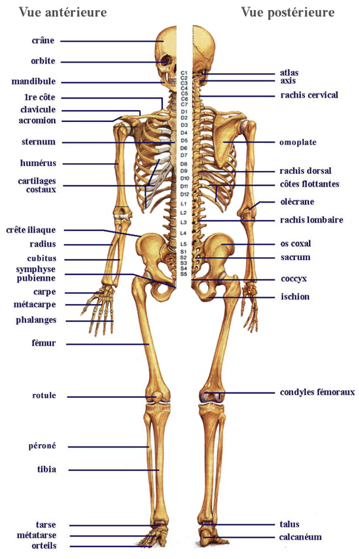
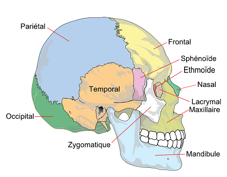
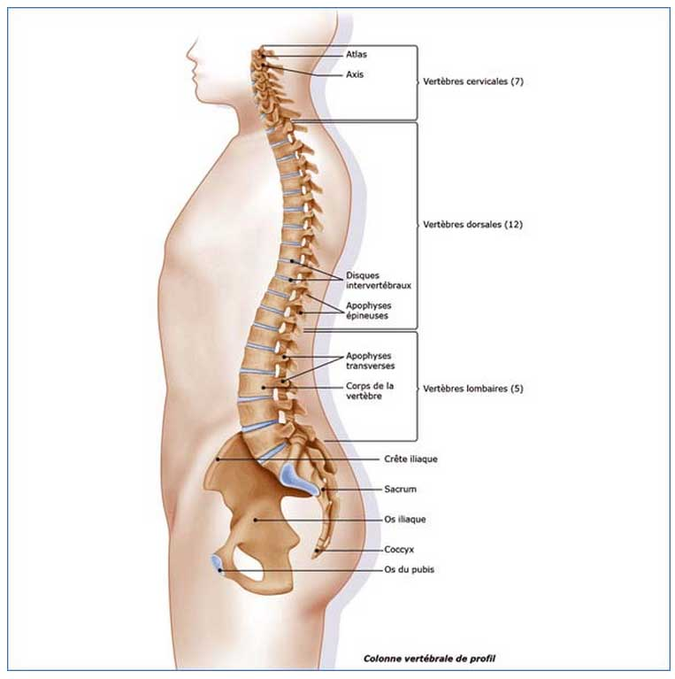
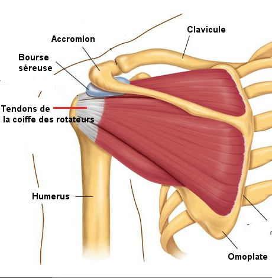
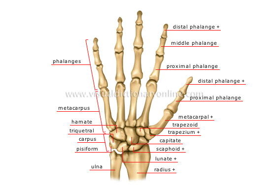
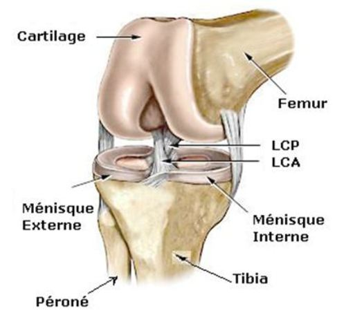

Bienvenue Sur Medical Education
Le squelette

Le squelette de l'homme adulte comprend 200 os et est forme de deux parties :
- Le squelette axial :
- La tete : 22 os.
- L'os hyoede.
- La colonne vertebrale : 26 os.
- La cage thoracique : 25 os.
- Le squelette appendiculaire :
- Les membres superieurs : 64 os.
- Les membres inferieurs : 62 os.
La tete

Le crene
Le crene est forme de 8 os (4 impairs et 4 pairs ou symetriques) qui forment la boete crenienne qui contient l'encephale:
- Le frontal : os impair et median, il forme le front et le plafond des cavites orbitaires et des fosses nasales.
- L’ethmoede : os impair et median, situe en arriere du frontal, constitue egalement les orbites les fosses nasales.
- Le sphenoede : os impair et median, situe en arriere de l’ethmoede. Son corps est creuse d’une cavite oe se trouve l’hypophyse.
- L'occipital : os impair et median, situe en arriere du sphenoede, creuse d’un large orifice, le trou occipital, qui permet la communication entre la boete crenienne et le canal rachidien.
- Les temporaux : os pairs et lateraux, il protege l'oreille interne.
- Les parietaux : os pairs et lateraux, situes en arriere du frontal et au-dessus des temporaux.
La face
La face est forme par 14 os qui se regroupent en deux massifs osseux : la mechoire superieur et la mechoire inferieure:
- Les 2 maxillaires superieurs : portent les dents de la mechoire superieure.
- Les 2 malaires : ceux sont les pommettes.
- Les 2 os propres du nez : forment le squelette du nez.
- Les 2 os lacrymaux : forment paroi interne des orbites.
- Les 2 os palatins : entrent dans la constitution des fosses nasales et de la voete du palais.
- Les 2 os cornets inferieurs : os tres fins appliques a la paroi externe des fosses nasales.
- L'os vomer : os entrant dans la constitution de la cloison des fosses nasales.
- Le maxillaire inferieur ou mandibule : seul os mobile de la face.
- L’os hyoede: il ne fait pas partie des os de la face. Il est situe dans le cou entre la mandibule et le larynx. Il soutient la langue et sert de point d’attache a certains de ces muscles.
La colonne vertebrale ou rachis
Constitution du rachis
Le rachis est constitue de vertebres dont la juxtaposition forme la colonne vertebrale.
- Les 7 vertebres cervicales : elles sont mobiles. On dit qu’elles sont en lordose convexite anterieure. Le rachis cervical est divise en deux parties:
- Le rachis cervical superieur : constitue de l’atlas et de l’axis.
- Le rachis cervical inferieur: constitue des cinq autres vertebres.
-
Les 12 vertebres dorsales : on parle de cyphose dorsale. Elles sont en convexite posterieure. Elles presentent sur la face laterale du corps vertebral des petites facettes qui sont des surfaces articulaires avec les cetes.
-
Les 5 vertebres lombaires : on parle de lordose lombaire, convexite anterieure. Leur taille augmente, surtout au niveau de leur corps tandis que la taille du canal rachidien diminue.
-
Les 5 vertebres sacrees : elles sont soudees entre elles et forment le sacrum. Le sacrum s’articule avec la cinquieme lombaire.
-
Les 4 a 5 vertebres coccygiennes : elles sont soudees entre elles et constituent le coccyx. Le coccyx resulte de la fusion de 4 a 5 vertebres coccygiennes primitives atrophiees. Sa forme est triangulaire, a base superieure. Il est appendu a la partie superieure du sacrum.

Morphologie d’une vertebre
Chaque vertebre comprend :
-
Un corps vertebral : partie anterieure arrondie en forme de cylindre, dont les faces s’articulent avec les vertebres voisines auxquelles elles sont reliees par le disque intervertebral.
-
Un arc osseux : partie posterieure du corps vertebral et limitant le trou vertebral ou trou rachidien qui permet passage de la moelle epiniere.
La cage thoracique
Les cetes
Elle comprend en arriere la portion dorsale de la colonne vertebrale, lateralement, les arcs costaux et en avant le sternum. Elle est constituee de 12 paires de cetes reparties en trois groupes :
- Les vraies cetes : 7 paires qui s’etendent en avant par l’intermediaire de leur cartilage jusqu’au sternum.
- Les fausses cetes : 3 paires qui se terminent en avant par un cartilage commun.
- Les cetes flottantes : 2 paires, leur cartilage se termine par un extremite libre.
Le sternum
Le sternum est situe a la partie anterieure et mediane du tronc. Il est divise en trois partie :
- Le manubrium sternale : partie superieure.
- Le corps : partie moyenne.
- L'appendice xiphoede : partie inferieur libre.
Les membres superieurs
La ceinture scapulaire
La ceinture scapulaire est constituee de chaque cete par deux os :
- La clavicule : os long qui s’articule avec le sternum et l’omoplate.
- L'omoplate : os plat, triangulaire :
- La cavite glenoede : cavite dans l'angle externe et qui s’articule avec l’humerus.
- L'acromion : extremite externe de la face posterieure de l'omoplate qui s'articule avec la clavicule.

Le bras
L'humerus est l'os du bras. Il est forme de trois parties :
- La tete humerale : partie superieur qui s'articule avec la cavite glenoede de l’omoplate.
- Le corps : lieu oe s'inserent les muscles.
- L'extremite inferieure qui comporte deux surfaces articulaire :
- La trochlee : s'articule avec le cubitus.
- Le condyle : s'articule avec le radius.
L’avant-bras
L'avant-bras est constitue de deux os :
- Le cubitus : os plus long que le radius :
- Extremite superieure comportant deux surfaces articulaires :
- La grande cavite sigmoede : s'articule avec la trochlee de l'humerus.
- La petite cavite sigmoede : s'articule avec le radius.
- Extremite inferieure : apophyse styloede du cubitus qui s’articule avec le poignet.
- Le radius :
- Extremite superieure : la tete du radius s’articule avec le condyle de l’humerus est avec une petite surface articulaire du cubitus.
- Extremite inferieure :
- En dedans, surface articulaire avec la tete du cubitus.
- A l’exterieur : apophyse styloede qui donne insertion a des ligaments du poignet.
- A sa face interieure : surface articulaire avec le carpe.
La main
La main est compose de 27 os que l'on divise en trois parties :
- Le carpe : forme de 8 os constituant le poignet qui sont disposes en 2 rangees.
- Le metacarpe : 5 os longs qui constituent la paume de la main.
- Les phalanges : 3 par doigts et 2 pour le pouce.

Les membres inferieurs
La ceinture pelvienne
La ceinture pelvienne est constituee par le sacrum et le coccyx en arriere, les os iliaques lateralement. Chaque os iliaque est constitue de l’ilion, l’ischion et le pubis.
La cuisse
Le femur est l'os de la cuisse.
- Extremite superieure : tete femorale qui s’articule avec la cavite cotyloede de l’os iliaque.
- Col du femur : partie retrecie de la tete femorale qui comporte deux apophyses:
- Le grand trochanter.
- Le petit trochanter.
- Extremite inferieure : 3 surfaces articulaires
- La trochlee : s'articule avec la rotule.
- Les 2 condyles : s'articule avec le tibia.

La jambe
- Le tibia : a l'interieur.
- Extremite superieure : 2 surfaces articulaires :
- La 2 cavites glenoedes : s'articule avec le condyle femoral.
- Extremite inferieure : surface articulaire qui s'articule avec le perone.
- Le tibia se prolonge en dedans par une saillie osseuse, la malleole tibiale ou malleole interne.
- Le perone : a l'exterieur.
- Extremite superieure : tete du perone qui s'articule avec le tibia.
- Extremite inferieure : surface articulaire avec le tibia formant une importante saillie appelee la malleole externe.

Le pied
Le pied est constitue de 26 os que l'on divise en trois parties :
- Le tarse : forme de 7 os.
- Le metatarse : forme de 5 os.
- Les phalanges : 3 phalanges par doigts et 2 phalanges pour le gros orteil.
Voir aussi :